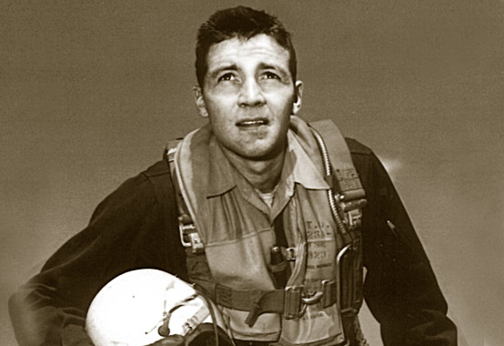

John Boyd one of the best Air Force pilot
Shown during the Korean war
- Born on January 23, 1927 in Erie Pennsyslvania.
- Boyd enlisted in the Army Air Corps on October 30, 1944, while still a junior in high school.
- Swimming instructor in Japan from January 1946 to January 1947
- Graduated from the University of Iowa in 1951 with a Bachelor's degree in economics
- Boyd wrote "Aerial Attach Study", which became teh "bible of air combat"
- His research of Energy-Maneuverablity (E-M) Theory, This theory helped develop the f-15, f-16 and a-10.
- "OODA loop" (observe, orient, decide, and act) that he developed is a one of the most significant contribution to militar strategy.
- Boyd wasn’t about to sell his soul, though. And he wasn’t intimidated by the fact that as a 39-year-old major, everyone else in the building was higher in rank and longer in the tooth.